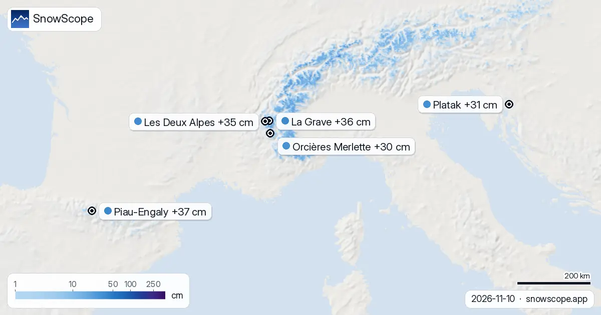
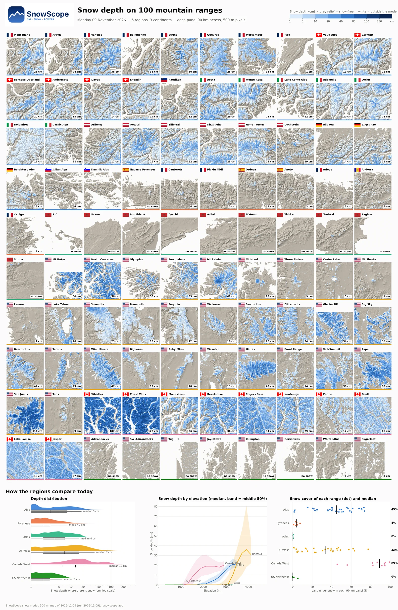
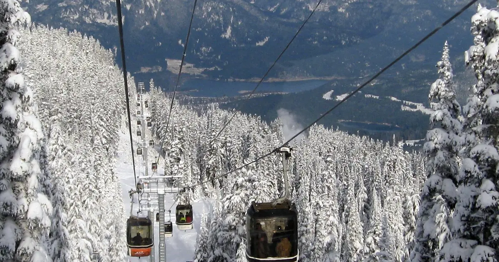
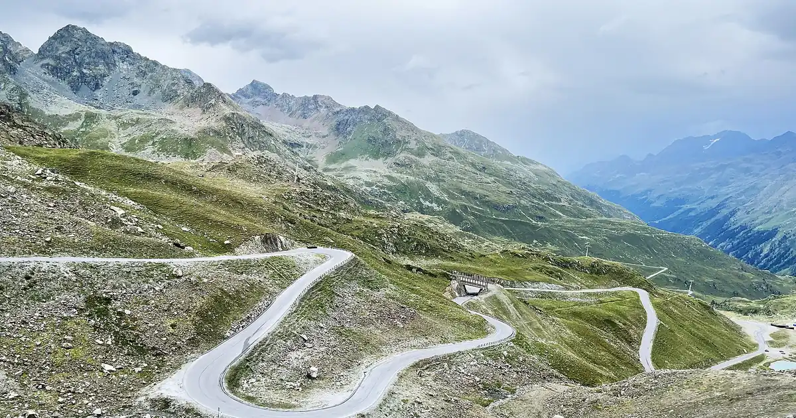
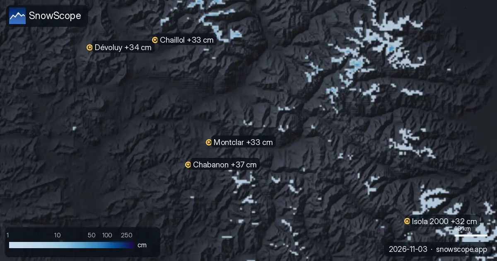

Bulletins neige · Régions de neige
Régions de neige: Chaque jour, nous listons les stations qui devraient recevoir le plus de neige fraîche, dans les 24 prochaines heures et jusqu'au …
+53 cm à Whistler Blackcomb : le tableau des prévisions neige à 72 heures (10 novembre)

Chaque jour, nous listons les stations qui devraient recevoir le plus de neige fraîche, dans les 24 prochaines heures et jusqu'au 13 novembre, en Europe, au Maroc et en Amérique du Nord, avec la limite pluie-neige. Sur le terrain, nous avons toujours une sonde ; ces chiffres disent où aller, la sonde dit ce qu'il y a sous les skis.
Europe et Maroc
À Piau-Engaly (France) : 6 cm dans les 24 heures, 37 cm en 72 heures, limite pluie-neige autour de 2 600 m. La Grave (France) attend 2 cm dans les 24 heures et 36 cm sur 72 heures, avec la limite pluie-neige vers 2 900 m. À Les Deux Alpes (France) : 2 cm dans les 24 heures, 35 cm en 72 heures, limite pluie-neige autour de 2 800 m.

Une image, 100 massifs dans les Alpes, les Pyrénées, l'Atlas et en Amérique du Nord : le Canada mène avec 89 % d'enneigement, les Alpes atteignent 45 %, l'Atlas et le nord-est des États-Unis sont encore secs.
Nous avons comparé la carte de hauteur de neige SnowScope à 2 012 stations de mesure : RMSE 7,7 cm, biais -0,5 cm, neige ou pas de neige juste 88 % du temps. Ce qui marche, ce qui ne marche pas encore, et la suite.

Notre tableau quotidien suit la neige à venir : les stations où la prévision en annonce le plus dans les 24 prochaines heures et jusqu'au 12 …

Quelles stations ont presque toujours de la neige ? Nous avons étudié 46 hivers passés (1980-81–2025-26) pour chaque station de notre carte et compté …

Chaque jour, nous listons les stations qui devraient recevoir le plus de neige fraîche, dans les 24 prochaines heures et jusqu'au 6 novembre, en …
La neige au 3 novembre 2026 : Kendall Mountain 53 in (134 cm) après une tempête, Big White 91 cm, les Alpes jusqu'à 55 cm à Bonneval-sur-Arc. Modèle et mesures.